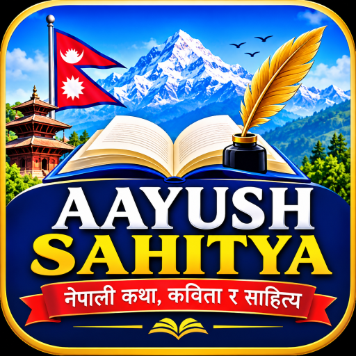

🧒📚
बाल साहित्य
बालबालिकाका लागि रमाइला कथा, कविता, ज्ञान र नैतिक सन्देश।
बाल साहित्य पढ्नुहोस् →
नेपाली कथा, कविता, बाल साहित्य र साहित्यको डिजिटल संसार
पढौँ • लेखौँ • सिकौँ • सिर्जना गरौँ
Theme र Speech सेटिङ छान्नुहोस्। Voice उपलब्धता ब्राउजर/डिभाइसमा निर्भर हुन्छ।
नेपाली भाषा, साहित्य, संस्कृति र सिर्जनालाई डिजिटल माध्यमबाट सबै पाठकसम्म पुर्याउने साझा प्रयास। आफूलाई मन परेको विधा छानेर पढ्न सुरु गर्नुहोस्।
बालबालिकाका लागि रमाइला कथा, कविता, ज्ञान र नैतिक सन्देश।
बाल साहित्य पढ्नुहोस् →महान व्यक्तिहरूको जीवन, संघर्ष, उपलब्धि र योगदानका प्रेरक प्रसंग।
जीवनी पढ्नुहोस् →भावना, प्रकृति, देशप्रेम र जीवनका विविध विषयका कविता।
कविता पढ्नुहोस् →मनोरञ्जन, कल्पना, अनुभव र जीवनोपयोगी सन्देश बोकेका कथा।
कथा पढ्नुहोस् →शिक्षा, समाज, प्रकृति, विज्ञान र जीवनका विविध विषयमा निबन्ध।
निबन्ध पढ्नुहोस् →रामायणका सात काण्ड र आदर्श जीवनका प्रेरणादायी प्रसंग।
रामायण पढ्नुहोस् →श्री हनुमान चालीसाको पाठ र श्रवण सुविधा।
हनुमान चालीसा खोल्नुहोस् →नेपाली भाषा र साहित्यको संरक्षण, सम्बर्द्धन तथा प्रवर्द्धन गर्नु; नयाँ पुस्तामा पढ्ने, लेख्ने र सिर्जना गर्ने बानीको विकास गर्नु; र पाठक तथा लेखकबीच साहित्यिक सम्बन्ध स्थापित गर्नु हाम्रो लक्ष्य हो।
Founder & Developer: Aayush Jaishi